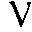

The first step I took was to try and find the best editor around. I started asking around to see who used what and to try to find out what the important qualities of an editor were. Don't make this mistake. Editors are one of the most religious beliefs a programmer holds. Every programmer is convinced that there's is the best. My office-mate uses PICO, some of my co-workers use EMACS, VI, SlickEdit, or any one of an unending list. Every person I talked to insured me that their selection was by far the best. When I inquired about the differences, they were primarily insignificant. That was when I learned the horrible truth. Most editors are essentially equivalent. No matter how hard people insist, most editors have more features than any user will ever use. (Except PICO). In the Linux community, these selections basically fall in to one of two categories. VI clones, or Emacs. My recommendation is that everyone learn one of these well. It doesn't really matter which one, just pick one, stick with it and use it. (Religiously if you must.)
I have gone to great lengths to learn VIM, a VI clone. And certainly if not THE best, one of the top contenders. Many features are shared among VI clones, basically the VI subset. The additional features are basically individual to each clone. VIM comes with most, if not all, Linux distributions. The home page for VIM is http://www.math.fu-berlin.de/~guckes/vim/. VIM is in active development and is getting better by the day. Syntax highlighting should be out, if not by the time you read this, then soon thereafter.
I will assume that most people know the basics of VI and want to change it from a simple tool to a powerful one. I will share some of the handy tips and tricks I use.
Programming, Tabs, and Tags.
ctags is a marvelous utility for C and C++ Programmers. ctags
comes with the VIM distribution. What this utility does is
create a list of all the subroutine names in the files you
specify and allow you to jump to the given subroutine while
in you editor with just one keypress. The way you run ctags
is simple.
Then, crank up your editor and move to wherever it is you call any subroutine from and press [CTRL]-]. This will take you immediately to wherever the routine is, even if it is in a different file.ctags *.c or ctags *.cpp
File Switching
I frequently work with several files concurrently and I
need to switch between these files continually. The
command to switch to another file in VIM is ":e fn".
The shortcut to switch to the last file edited is ":e #".
This is fine for normal use, but I switch files often, and
4 keystrokes seems like a bit much. This is where VIM's
key mapping comes in. VIM like most editors has an rc
file. It is called .vimrc, what a shock. 8)
In this file I have the following command.
This command lets me switch buffers with a single keypress. The other nice feature in VIM for switching between files is tab completion for file names. The way tab completion works is to take whatever letters you have typed in so far on for the file name and find all of the files that could possibly match. Hitting tab will scroll through the list of files until you find the one you want. If no beginning letters are specified for the file name, it will scroll through them all." Save and switch to other buffer. map N :w [CTRL]-M
If you examine the first line, you will see that it does the following.map C 0i/*[CTRL-ESC]A*/[CTRL-ESC]j map T 0xx$xxj
![[ TABLE OF CONTENTS ]](../gx/indexnew.gif)
![[ FRONT PAGE ]](../gx/homenew.gif)